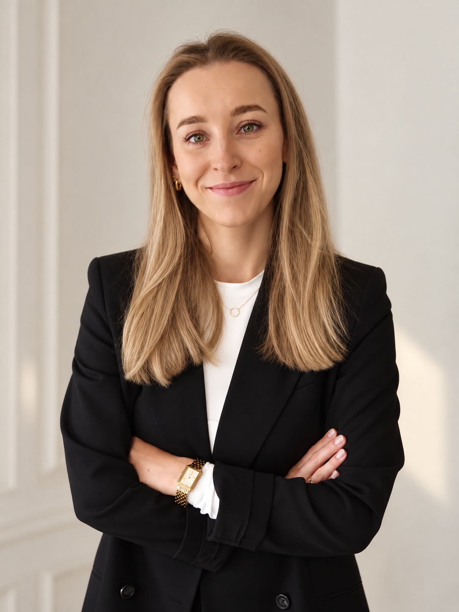

Prawo cywilne
Pomoc w przygotowaniu i audycie umów, konsultacje oraz wsparcie w dochodzeniu roszczeń — zarówno w imieniu konsumentów, jak i przedsiębiorców. Pomoc na etapie przedsądowym oraz w ocenie możliwych sposobów rozwiązania sporu.
Wsparcie prawne dla osób prywatnych i przedsiębiorców.
Skontaktuj sięPomoc w przygotowaniu i audycie umów, konsultacje oraz wsparcie w dochodzeniu roszczeń — zarówno w imieniu konsumentów, jak i przedsiębiorców. Pomoc na etapie przedsądowym oraz w ocenie możliwych sposobów rozwiązania sporu.
Wsparcie pracowników i pracodawców w sprawach związanych z zatrudnieniem, umowami o pracę, rozwiązaniem stosunku pracy oraz bieżącymi problemami z zakresu prawa pracy.
Doradztwo dla przedsiębiorców w sprawach związanych z prowadzeniem działalności gospodarczej, zawieraniem umów i bieżącą obsługą prawną.
Wsparcie przy zakładaniu, bieżącym funkcjonowaniu oraz likwidacji spółek osobowych i kapitałowych. Pomoc w przygotowywaniu dokumentów korporacyjnych oraz w bieżących sprawach związanych z działalnością spółki.
Reprezentacja klientów w postępowaniach sądowych oraz przygotowywanie strategii działania na etapie sporu.

Nazywam się Katarzyna Mazek i jestem radcą prawnym. Specjalizuję się w prawie pracy, prawie cywilnym i prawie gospodarczym.
Doświadczenie zdobywałam w mniejszych kancelariach prawnych, co pozwoliło mi poznać potrzeby klientów z bliska i nauczyło mnie, że dobra pomoc prawna zaczyna się od uważnego słuchania i zrozumienia konkretnej sytuacji.
Posługuję się językiem angielskim i francuskim. Ponieważ nauka języków obcych to moja pasja, jeśli zapał nie osłabnie, być może już wkrótce będę mogła dopisać do tej listy również język koreański.